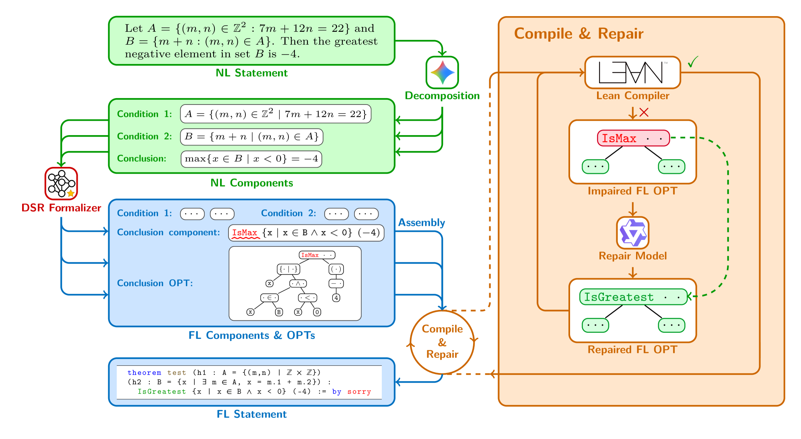

Introduces the PRIME benchmark of 156 theorems annotated in Lean 4 for autoformalization.
Abstract
Statement autoformalization acts as a critical bridge between human mathematics and formal mathematics by translating natural language problems into formal language. While prior works have focused on data synthesis and diverse training paradigms to optimize end-to-end Large Language Models (LLMs), they typically treat formal code as flat sequences, neglecting the hierarchical logic inherent in mathematical statements. In this work, we introduce Decompose, Structure, and Repair (DSR), a neuro-symbolic framework that restructures autoformalization into a modular pipeline. DSR decomposes statements into logical components and maps them to structured operator trees, leveraging this topological blueprint to precisely localize and repair errors via sub-tree refinement. Furthermore, we introduce PRIME, a benchmark of 156 undergraduate and graduate-level theorems selected from canonical textbooks and expertly annotated in Lean 4. Experimental results demonstrate that DSR establishes a new state-of-the-art, consistently outperforming baselines under equivalent computational budgets. The datasets, model, and code are available at https://github.com/XiaoyangLiu-sjtu/DSR.
Problem
Statement autoformalization (translating natural language math to formal code) treats formal code as flat sequences, ignoring the hierarchical logic inherent in mathematical statements. This leads to errors that are difficult to localize and repair.
Approach
DSR (Decompose, Structure, and Repair) is a neuro-symbolic framework that restructures autoformalization into a modular pipeline. It decomposes natural language statements into logical components via semantic canonicalization, maps each component to an operator tree (OPT) representation capturing hierarchical structure, and uses a tree-guided repair loop that leverages the OPT to localize errors at the sub-tree level. A curriculum learning strategy trains the formalizer on increasingly complex statements.

Figure 1 : The Decompose, Structure, and Repair (DSR) Framework. Given an NL statement, DSR first decomposes it into logical NL components. The framework then structures the translation by mapping each NL component to its corresponding FL component and its associated FL OPT. Finally, a tree-guided repair loop leverages the OPT to precisely localize and repair errors via sub-tree refinement.
Results
On ProverBench, DSR achieves Pass@1 of 32.62 (SC) and 25.85 (CC), improving over the baseline by +3.08 and +4.31 respectively. On ProofNet, improvements are +3.78 SC and +4.31 CC at Pass@1. The operator tree and curriculum learning components each contribute independently. DSR with an 8B model outperforms several 32B baselines on correctness checking.